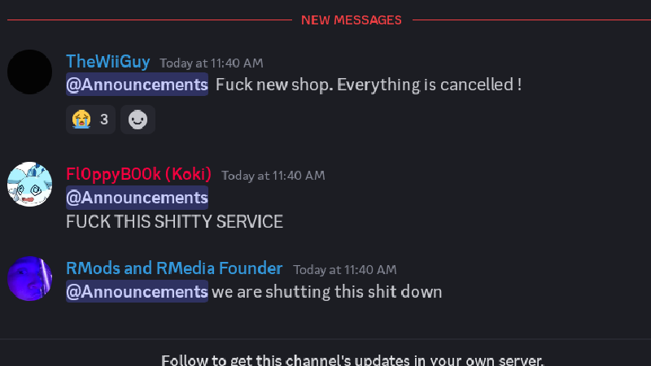
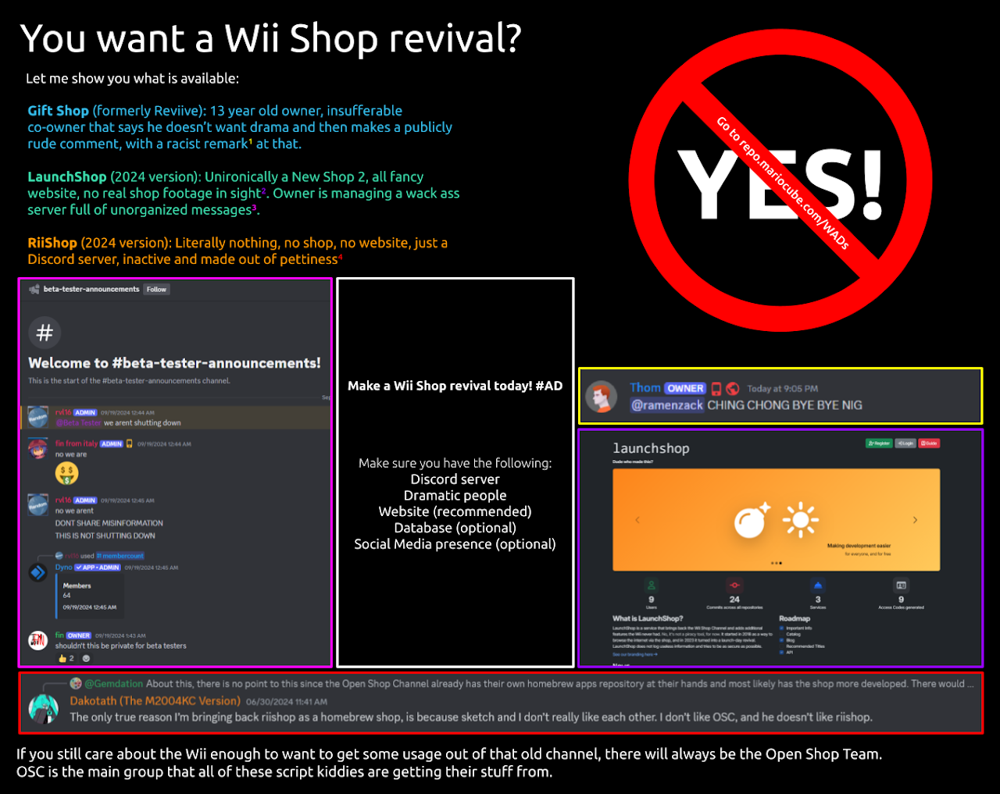
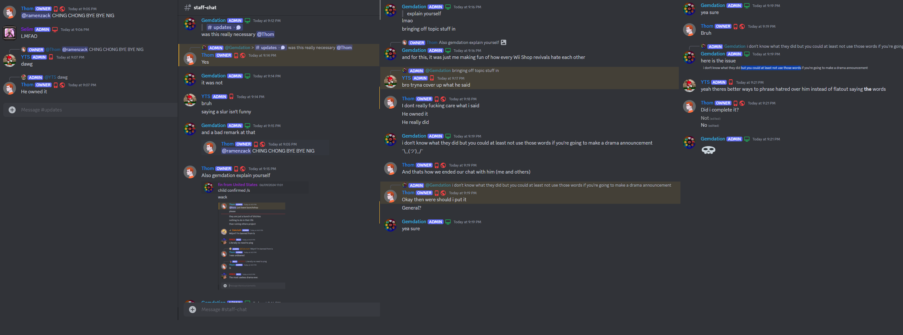

The Wii Shop Experience
August 8, 2024
When I got my Wii for Christmas, I was aware that RiiConnect24 (at the time) had custom-made revivals for WiiConnect24 channels and such that I knew I had to try. I give major props to RiiConnect24/WiiLink, Wiimmfi, and the Open Shop Channel for having good services and teams that work fine enough to work with them.
In this post, I'll type out my experience with Wii Shop revivals.
Rii Shop Channel
Remember the months-old Rii Shop Channel? I remember seeing it at school and getting the WAD downloaded on my phone, planning to try it later but never did. At the time I heard that downloads weren't working so I put it off for a while.
Later on, WiiLink made an announcement stating that LarsenV had leaked a list of Wii console serial numbers via an accidentally showing them on a Discord screen share call. LarsenV already made the project make the project not have the best public image, so this just set the Discord server on fire.
It led to a defunct project, internet drama, and a disappointment for everyone. Later on, the Reviive Shop Channel tried to become a revival of Rii Shop and...it is messy as one would think.
Reviive Shop Channel
Starting off as the successor to Rii Shop, Reviive Shop is another replacement for, you guessed it, Wii Shop Channel. It is (and has been) barely working, and not even available for private testing yet. Team members are very hostile and the project leader only knows how to work with HTML, meaning that they don't know how the database for the shop works all that well.
I first joined their Discord server when I saw, wow, a developer had the Wii Shop main menu screen show the Reviive Shop Channel texts! Jokes aside, they do seem like they are getting the Wii Shop work done, albeit getting nowhere behind the HTML pages.
Of course with a Wii Shop revival you'll have children causing drama, so there is no way to get the project team to act mature enough to be taken seriously. The Discord at the time was dead with useless pings worrying about the Discord being "spied on".
Recently, they seem to have something done, far from everything but it is existing. Then came along the New Shop Channel, I'm getting tired of these shops already but we're still not done yet.
New Shop Channel
New Shop was a promising revival with a full website instead of a freely-hosted website and also had a roadmap with what the frontend and backend were going to have. It looked promising...from afar.
Team members once again got involved in drama, I've been told that the team leader (TheWiiGuy) had not done any actual work (coding) for the project. Members did not like how projects kept failing and were unfinished.
Fin, one of the New Shop developers, had made a poll comparing him to TheWiiGuy with the question of "who would be a better owner". The poll was later deleted, of course. Surprisingly, this is not the first dummy moment that has happened with New Shop. Apparently one of the developers made a terrible sexual assault joke, guess how that went.
This drama wouldn't be any fun without me having fun, so I searched for channels with terrible permissions. I saw that their announcements channels gave access to members to manage messages. You bet I hopped on an alternative account and deleted every single message.
The poll then came back up and the project leader was not happy from getting criticized, people were wondering why this project was gonna go, staff members assured them that it would still exist, and then, an abrupt 3 pings by said staff stating that they were gonna shut the project down.
And now...
Rii Shop has been turned into a Open Shop Channel replacement, y'know, one that is made by competent people. Reviive Shop is working without any hopes of getting downloads, a host, or a functional website. New Shop is dead, and Launch Shop is being developed...?
I'll definitely update this later at some point but I just thought I'd make this to share my experience with incompetent niche projects.
January 29, 2025 Update
I saw this GBAtemp post, and I just got reminded to update this page for any new visitors.
Starting off with something I forgot to add, a screenshot of New Shop's last announcements before the crash.
Here is a cool image I'll just throw in too.
Gift Shop Channel
Reviive had a short-lived revival called Gift Shop Channel, the name was made by me in 5 seconds. Barely anyone knows of it's existence, since they were all banned, of course.
The first message was from an annoucement channel and the three that follow it were the private channel, both channels of Gift Shop. I left shortly after this. And members say that it just got deleted after a meltdown. LaunchShop was the only one left after this.
Both LaunchShop and Rii Shop's second shutdown
Around a few months before the server got deleted and the subdomain getting nuked, I saw Fin's venting blog on his website. It appears that the ftolnks.xyz domain is down so I can't share it. But you can see the title of it on my right screenshot that I posted. I found out late that it just got shutdown.

Now I'm not a defender of Dakotath but hacking their website was seriously messed up. The second Rii Shop I heard got closed, with them not even engaging with the idea of a Wii Shop revival anymore.
P.S.
That should be the end of it but if it's not, I'll add an entire new blog on gemdation.com and not this Google Sites page. Lots of websites, right?